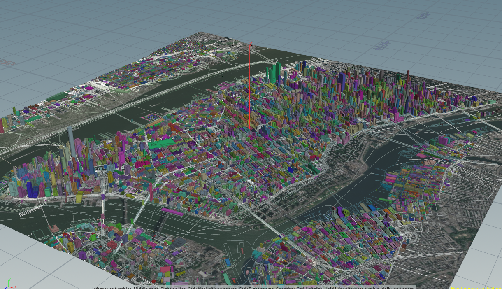
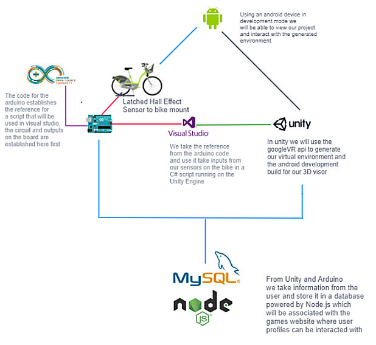
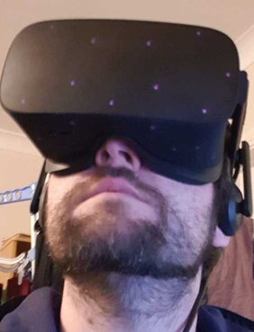
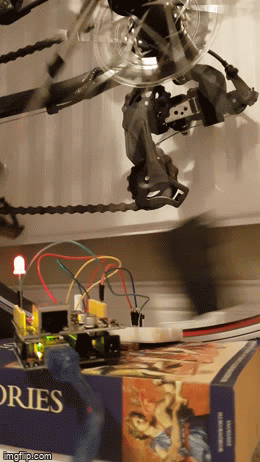

Cycling Simulation Experience
This was a university project that lasted one year. As a group project, it had a lot of teething problems, we lost a group member in the beginning of the project but in the end, a successful and well-received prototype was implemented. The research around the project was in the area of virtual tourism, the psychological effects of virtual reality environments, and multiplayer reactive environments. This project had many aims, it touched into the areas of virtual tourism, learning application, and simulation.
The visual guide for the VR bike included a NodeJS multiplayer layer using the SocketIO library that would log all server events to an SQL database, but this was not included outside of testing in initial sprints. The Arduino using a hall effect sensor and magnet attached to the spokes of the wheel would pass information serially to a computer running a VR environment, the information would be processed to a controller script in C#. The design component of this project included an Android display but it was replaced with an Oculus rift VR headset early enough in the project for it to be integrated.
Having a natural affinity towards all things crafty, a lot of projects I have been involved with tend to have an engineering discipline. As the project proceeded, steering and mounting the bicycle by the user had to be considered and for this prototypes of wood and metal were used for this purpose. The welded frame would house the bicycle and a collection of objects from IKEA would do the rest. The project was well designed so it moved quickly, another aspect of the project was looking for ‘real’ information and to create a simulation experience. To create a real experience procedural mapping was heavily experimented within the Unity pipeline. With a combination of Maya/Blender/Houdini/Mapbox, the correct object files were created accurately displaying entire cities/landscapes. Steering was one of the final components to be added, it was achieved using a potentiometer. Testing this project was very fun, adjusting the scripts in Unity to mimic as closely the reality of cycling with acceleration/drag algorithms was very interesting to design.
The most rewarding part of this project was because of its scale it could not be assessed in the same area as other projects so we had it in the foyer of the university. It attracted a lot of attention and we got some great feedback about the design and potential application. There is a second larger version of this project that has been designed parallel to this project using some different components that will be hopefully completed in the future.